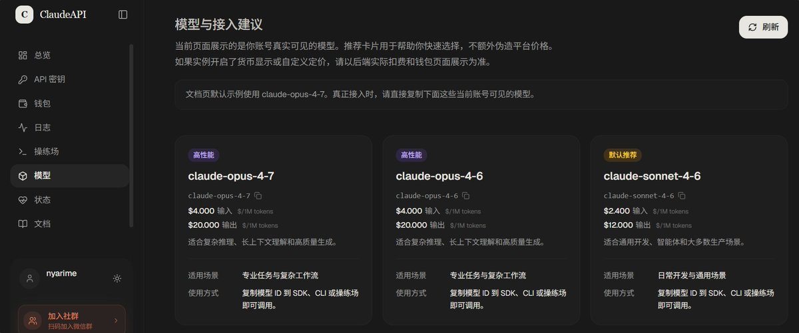
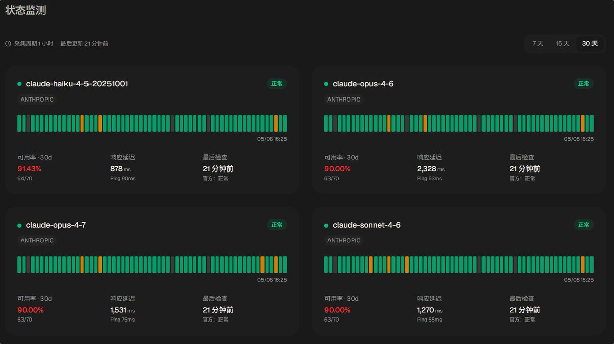
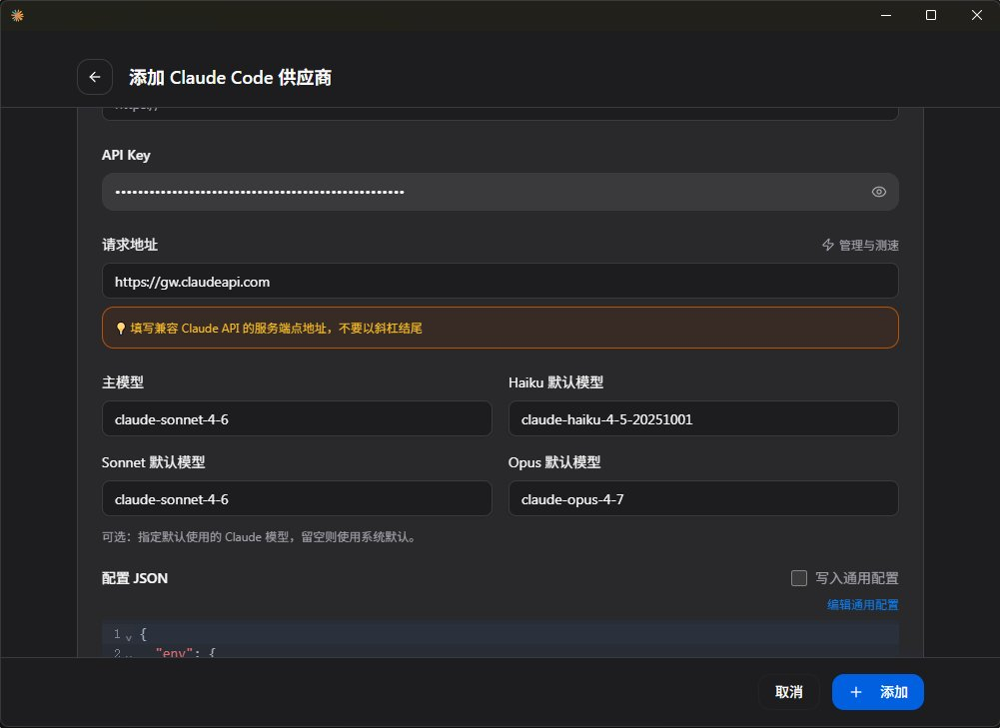

前阵子Claude Max又用限了，就找了多家API中转站顶着用，也用了多个检测工具识别中转站是否掺水的问题
总体来说，这家 https://t.co/QJABzGLQj7 让我挺满意的，他们官网介绍渠道来自Anthropic官Key+AWS Bedrock。实际体验上也跟A\的差别不大，用CC Switch改了下改 base_url 就能接
至于检测工具，我推荐 https://t.co/F3ha24tCVl 这个网站，临时生成个API Key然后填入测试后revoke就行。不过第三方站点仍建议用多少充多少，就跟买VPS不要轻易年付一样，希望能帮到推友们
总体来说，这家 https://t.co/QJABzGLQj7 让我挺满意的，他们官网介绍渠道来自Anthropic官Key+AWS Bedrock。实际体验上也跟A\的差别不大，用CC Switch改了下改 base_url 就能接
至于检测工具，我推荐 https://t.co/F3ha24tCVl 这个网站，临时生成个API Key然后填入测试后revoke就行。不过第三方站点仍建议用多少充多少，就跟买VPS不要轻易年付一样，希望能帮到推友们


